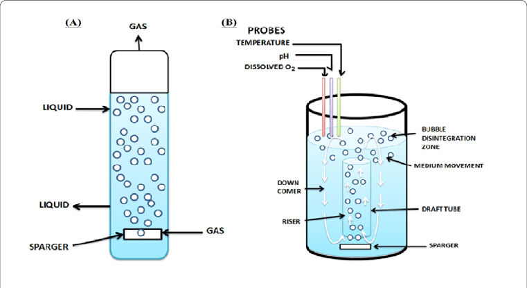
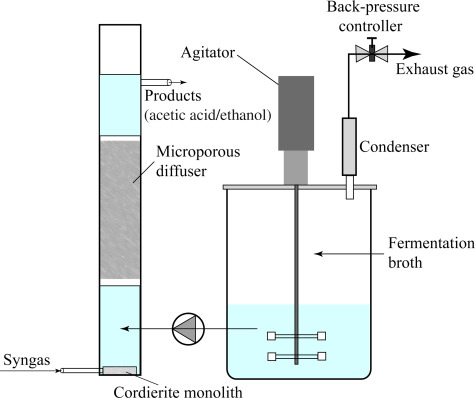

Optimizing BC Production in a Bioreactor
A potential hardware subproject is to develop and optimize BC production in our chassis using a bioreactor.
Based on the results from wetlab on conditions of bacteria growth and BC production, supported by the findings from the modelling subproject, a bioreactor would be developed, contributing in two main ways:
- Allow quicker development of high quality BC with the parameters we hope it will be produced with (as determined by the wetlab) to optimize and speed up production to then be commercialized
- Can also contribute to determining optimal conditions since we can streamline production using it.
- Play a large role in our eventual commercialization and supply chain integration.
- Can send the bioreactor out to target customers (food coating companies) to allow in house development and easier integration of Cellucoat into the supply chain.
- Want the bioreactor to be easy to use and accessible
The main focus of this subproject would be on ease of testing and commercialization.
Since bioreactors get very technical and there is lots of research out there on improving the technical specifics of them, the biggest challenge we would tackle is how to best integrate this into the supply chain.
We would first build a bioreactor based on an existing model, some bioreactors types to investigate are:
Bubble Column Bioreactors

Figure 1: An example of a bubble column bioreactor.
Biofilm Bioreactors

Figure 2: An example of a biofilm bioreactor.
Others Used in Literature (Airfilms, etc.)
Future Directions
For iGEM, we would build on other teams work by most likely replicating SoundBio’s (iGEM 2019), which is a bubble column bioreactor.
- Bubble column bioreactor: an apparatus used to generate and control gas-liquid chemical reactions → most useful for manipulating conditions of growth
Sound bio’s goals were very similar to what we hope to do.
“Our bioreactor allows for control of the pH, oxygen level, and temperature of the growth environment, in order to provide optimal conditions for maximal cellulose production from our bacteria.” - Soundbio 2019
After we build this bioreactor, which we have on good record was very impressive and successful (thanks Andrew and Seb!) as well as usable, safe, and cheap, we would work on the high level integration of bioreactors as a product. Things such as how to streamline and simplify the pre and post-processing, use of media, etc. of the cellulose and apparatus so it can be easily distributed and usable by food coating/packaging companies.
Materials, Skills, and Personnel Required
We will need quite a few materials to work with and develop bioreactors. These are generally standardized among types (i.e. most bubble column reactors use the same main set of materials), but vary based on the type of bioreactor. If we need any structural materials, we can attempt to 3D print them (such as Unesp Brazil did, iGEM 2018).
Most materials will be available at SSE since this is very common type of research in many chemical and biomedical engineering research labs.
Skills and personnel will be required, seeing as most of us on the team have likely not designed bioreactors before, we would need to consult researchers and lab technicians who have, also all available from SSE. For example, Dr. Kallos’s lab deals with lots of bioreactor designs, so he can be a potential future HP contact.
Pros and Cons
Pros
- Ultimately, this hardware subproject has potential to not only inform/confirm the wetlab’s testing and findings, however will also be the likely development process for our final product (hypothetically) and plays a large role in the eventual development and commercialization of Cellucoat in the community.
- Will also be able to be used (ideally) by future iGEM teams as well as in the community of synbio and BC development (which is a pretty big community)
Cons
- Team current capability
- There is a significant learning curve to overcome to learn how to build and develop these due to the team’s collective current skill level.
- However we have all of the resources necessary at UCalgary and specifically the SSE
- Working on this project would take a considerable amount of time, dedication, and work
- This has been worked on in literature quite a bit:
- Good since we have a strong base of literature to refer to and build on
- Challenge to add significant novelty to the existing designs, function, or application to meet the criteria
- However we have all the tools to pull this off successfully for our project which, for our application, should already have quite a bit of novelty
- Any more improvements can be worked on once we have a better idea of where these can be implemented, what the weaknesses of our bioreactors may be, etc. once we actually get working on them.
- Finally, if we focus less on improving the technical details and focus on improving the integration elements, it can be very strong.
References:
- Azeredo HM, Barud H, Farinas CS, Vasconcellos VM, Claro AM. Bacterial cellulose as a raw material for food and Food Packaging Applications. Frontiers in Sustainable Food Systems. 2019;3.
- Bioreactors types: 6 types of bioreactors used in Bioprocess Technology [Internet]. Biology Discussion. 2015 [cited 2022Apr13]. Available from: https://www.biologydiscussion.com/biotechnology/bioprocess-technology/bioreactors-types-6-ty
- Blanco Parte FG, Santoso SP, Chou C-C, Verma V, Wang H-T, Ismadji S, et al. Current progress on the production, modification, and applications of bacterial cellulose. Critical Reviews in Biotechnology. 2020;40(3):397–414.
- Cheng K-C, Catchmark JM, Demirci A. Enhanced production of bacterial cellulose by using a biofilm reactor and its material property analysis. Journal of Biological Engineering. 2009;3(1).
- Revin V, Liyaskina E, Nazarkina M, Bogatyreva A, Shchankin M. Cost-effective production of bacterial cellulose using acidic food industry by-products [Internet]. Brazilian Journal of Microbiology. No longer published by Elsevier; 2018 [cited 2022Apr13]. Available from: https://www.sciencedirect.com/science/article/pii/S151783821730134X